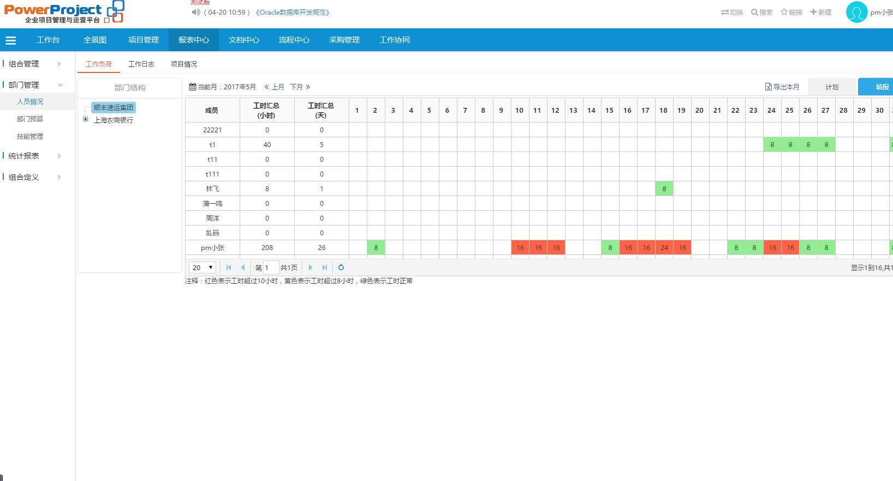

启动
申请完成
完成情况审批
文档审批
结项
启动
申请完成
完成情况审批
文档审批
结项
启动
申请完成
完成情况审批
文档审批
结项
启动
申请完成
张三完成情况审批
文档审批
结项
启动
申请完成
pm完成情况审批
文档审批
结项
启动
申请完成
pm完成情况审批
pm小张文档审批
结项
启动
申请完成
pm完成情况审批
pm小张文档审批
经理结项
标准产品开发-2018
1000中信建投定制开发-2017
800常熟农商银行（四期）
600武汉朗来科技
300珠海派诺珠海派诺珠海派诺珠海派诺珠海派诺珠海派诺
100文档版本：2.0文档大小：25.21 KB关键字：上传者：gsunis上传日期：2017/7/27
保工作有章可循，围绕项目管理、财务管理、人力资源管理、 党建及廉政建设等方面，新增及修订完善了各类管理制度20 佘项，为强化管理和廉洁从业提供了制度遵循，夯实了不敢 腐、不能腐的制度体系，有效克服了管理漏洞和制度死角，
文档版本：2.0文档大小：25.21 KB关键字：上传者：gsunis上传日期：2017/7/27
保工作有章可循，围绕项目管理、财务管理、人力资源管理、 党建及廉政建设等方面，新增及修订完善了各类管理制度20 佘项，为强化管理和廉洁从业提供了制度遵循，夯实了不敢 腐、不能腐的制度体系，有效克服了管理漏洞和制度死角，
文档版本：2.0文档大小：25.21 KB关键字：上传者：gsunis上传日期：2017/7/27
保工作有章可循，围绕项目管理、财务管理、人力资源管理、 党建及廉政建设等方面，新增及修订完善了各类管理制度20 佘项，为强化管理和廉洁从业提供了制度遵循，夯实了不敢 腐、不能腐的制度体系，有效克服了管理漏洞和制度死角，
文档版本：2.0文档大小：25.21 KB关键字：上传者：gsunis上传日期：2017/7/27
保工作有章可循，围绕项目管理、财务管理、人力资源管理、 党建及廉政建设等方面，新增及修订完善了各类管理制度20 佘项，为强化管理和廉洁从业提供了制度遵循，夯实了不敢 腐、不能腐的制度体系，有效克服了管理漏洞和制度死角，
文档版本：2.0文档大小：25.21 KB关键字：上传者：gsunis上传日期：2017/7/27
保工作有章可循，围绕项目管理、财务管理、人力资源管理、 党建及廉政建设等方面，新增及修订完善了各类管理制度20 佘项，为强化管理和廉洁从业提供了制度遵循，夯实了不敢 腐、不能腐的制度体系，有效克服了管理漏洞和制度死角，
文档版本：2.0文档大小：25.21 KB关键字：上传者：gsunis上传日期：2017/7/27
保工作有章可循，围绕项目管理、财务管理、人力资源管理、 党建及廉政建设等方面，新增及修订完善了各类管理制度20 佘项，为强化管理和廉洁从业提供了制度遵循，夯实了不敢 腐、不能腐的制度体系，有效克服了管理漏洞和制度死角，
文档版本：2.0文档大小：25.21 KB关键字：上传者：gsunis上传日期：2017/7/27
保工作有章可循，围绕项目管理、财务管理、人力资源管理、 党建及廉政建设等方面，新增及修订完善了各类管理制度20 佘项，为强化管理和廉洁从业提供了制度遵循，夯实了不敢 腐、不能腐的制度体系，有效克服了管理漏洞和制度死角，
文档版本：2.0文档大小：25.21 KB关键字：上传者：gsunis上传日期：2017/7/27
保工作有章可循，围绕项目管理、财务管理、人力资源管理、 党建及廉政建设等方面，新增及修订完善了各类管理制度20 佘项，为强化管理和廉洁从业提供了制度遵循，夯实了不敢 腐、不能腐的制度体系，有效克服了管理漏洞和制度死角，
文档版本：2.0文档大小：25.21 KB关键字：上传者：gsunis上传日期：2017/7/27
保工作有章可循，围绕项目管理、财务管理、人力资源管理、 党建及廉政建设等方面，新增及修订完善了各类管理制度20 佘项，为强化管理和廉洁从业提供了制度遵循，夯实了不敢 腐、不能腐的制度体系，有效克服了管理漏洞和制度死角，
文档版本：2.0文档大小：25.21 KB关键字：上传者：gsunis上传日期：2017/7/27
保工作有章可循，围绕项目管理、财务管理、人力资源管理、 党建及廉政建设等方面，新增及修订完善了各类管理制度20 佘项，为强化管理和廉洁从业提供了制度遵循，夯实了不敢 腐、不能腐的制度体系，有效克服了管理漏洞和制度死角，
发布日期：2017-2-12
开发日期：2017-2-12测试日期：2017-2-25产品上线：2017-3-2
发布日期：2017-3-18
开发日期：2017-3-18测试日期：2017-3-28产品上线：2017-4-6
创建日期：2017-4-15
开发日期：2017-4-15测试日期：2017-4-25产品上线：2017-5-8
发布日期：2017-5-20
发布日期：2017-6-5
发布日期：2017-7-18
发布日期：2017-7-25
发布日期：2017-8-8
发表人：demo发表时间：2017-01-22失效时间：2017-07-22公告类型：项目动态

1、根据流程定制模板。
2、周报/月报/会议纪要 定制
3、项目状态比较多，界面错乱。
4、支持手机，尤其是Android手机的访问，界面不要错乱。
5、admin配置，检查是否有出现错误的地方。
6、项目模板需要共享全局。（已经支持）
1、此软件中提供的文档管理，基本上是基于用户用相关软件编制好后上传的，完全依耐用户的软件配置,这样做在安全和保密性上讲可能有缺陷。而更专业的PDM、PLM等软件是各种文档都在软件中编制修改，文档离开软件不能打开。另此软件的文控功能不太强，对ISO文控管理支持不太好。
2、此平台中没有产品数据管理的功能,这项功能对开发人员有比较好的帮助。我认为这是我们的一个潜在需求。一个开发项目会输出一个产品结构(配方或BOM)，此系统只能管理文档级，不提供结构数据管理功能。无法对应此项目配方中的结构，并按产品结构追溯相关原料的取样和TDS和MSDS等。同时还需考虑可为以后的配方输出到ERP系统提供接口。也不能提供基于产品级的工艺管理要求。
| # | 当前状态 | 销售项目编号 | 客户名称 | 立项日期 | 会签人 | 审核人 | 提交人 | 提交时间 |
|---|---|---|---|---|---|---|---|---|
| 1 | 评审结论 | RV2017022401 | 文档评审列表 | 2017-02-24 | 张小军 | pm | 张小军 | 2017-02-24 |
| 2 | 评审结论 | RV2016102501 | 设计要文档评审了 | 2017-02-25 | 张小军 | pm | 张小军 | 2017-02-25 |
| 3 | 评审结论 | RV2016102102 | 需求文档的评审 | 2016-10-21 | 张小军 | 总经理 | 张小军 | 2016-10-21 |
| 4 | 评审组长审核 | RV2016101901 | 需求规格说明书第一次评审 | 2016-10-19 | 张小军 | pm | 张小军 | 2016-10-19 |
| 5 | 评审组长审核 | R00016 | 文档评审二 | 2016-10-09 | 张小军 | pm小王 | 张小军 | 2016-10-09 |
| 6 | 评审结论 | R00012 | 文档评审 | 2016-08-02 | 张小军 | pm | 张小军 | 2016-08-02 |
| 7 | 评审组长审核 | R00010 | 可行性分析报告评审 | 2016-05-12 | 张小军 | pm | 张小军 | 2016-05-12 |
| 序号 | 项目编号 | 项目名称 | 规格 | 项目类型 | 项目经理 | 任务名称 | 2017年 | 2018年 | 2019年 | 2020年 |
|---|---|---|---|---|---|---|---|---|---|---|
| 1 | 123A1 | 项目名称01 | 规格A | 项目类型1 | pm | 任务1 | 10万 | 20万 | 30万 | 40万 |
| 2 | 123A2 | 项目名称02 | 规格D | 项目类型2 | 总经理 | 任务2 | 10万 | 20万 | 30万 | 40万 |
| 3 | 123A3 | 项目名称03 | 规格C | 项目类型3 | 王经理 | 任务3 | 10万 | 20万 | 30万 | 40万 |
| 4 | 123A4 | 项目名称04 | 规格D | 项目类型2 | 小李 | 任务4 | 10万 | 20万 | 30万 | 40万 |
| 5 | 123A5 | 项目名称05 | 规格D | 项目类型3 | pm | 任务5 | 10万 | 20万 | 30万 | 40万 |
| 6 | 123A6 | 项目名称06 | 规格B | 项目类型2 | pm | 任务6 | 10万 | 20万 | 30万 | 40万 |
| 7 | 123A7 | 项目名称07 | 规格A | 项目类型1 | pm | 任务7 | 10万 | 20万 | 30万 | 40万 |
| 8 | 123A8 | 项目名称08 | 规格D | 项目类型1 | pm | 任务8 | 10万 | 20万 | 30万 | 40万 |
| 9 | 123A9 | 项目名称09 | 规格D | 项目类型3 | pm,王经理 | 任务9 | 10万 | 20万 | 30万 | 40万 |
| 10 | 123A10 | 项目名称10 | 规格A | 项目类型2 | pm | 任务10 | 10万 | 20万 | 30万 | 40万 |
| 11 | 123A11 | 项目名称11 | 规格B | 项目类型2 | pm | 任务11 | 10万 | 20万 | 30万 | 40万 |
| 12 | 123A12 | 项目名称12 | 规格C | 项目类型1 | pm | 任务12 | 10万 | 20万 | 30万 | 40万 |
| 13 | 123A13 | 项目名称13 | 规格C | 项目类型1 | pm | 任务13 | 10万 | 20万 | 30万 | 40万 |
| 14 | 123A14 | 项目名称14 | 规格C | 项目类型2 | pm | 任务14 | 10万 | 20万 | 30万 | 40万 |
| 15 | 123A15 | 项目名称15 | 规格A | 项目类型1 | pm,小李 | 任务15 | 10万 | 20万 | 30万 | 40万 |
| 16 | 123A16 | 项目名称16 | 规格C | 项目类型2 | pm | 任务16 | 10万 | 20万 | 30万 | 40万 |
| 17 | 123A17 | 项目名称17 | 规格A | 项目类型1 | pm | 任务17 | 10万 | 20万 | 30万 | 40万 |
| 18 | 123A18 | 项目名称18 | 规格B | 项目类型1 | pm | 任务18 | 10万 | 20万 | 30万 | 40万 |
| 19 | 123A19 | 项目名称19 | 规格C | 项目类型3 | pm | 任务19 | 10万 | 20万 | 30万 | 40万 |
| 20 | 123A20 | 项目名称20 | 规格C | 项目类型2 | pm | 任务20 | 10万 | 20万 | 30万 | 40万 |
| 序号 | 项目编号 | 项目名称 | 规格 | 项目类型 | 项目经理 | 项目启动时间 | 项目结束时间 | 周期 |
|---|---|---|---|---|---|---|---|---|
| 1 | 123A1 | 项目名称01 | 规格A | 项目类型1 | pm | 2016-12-01 | 2017-03-01 | 4个月 |
| 2 | 123A2 | 项目名称02 | 规格D | 项目类型2 | 总经理 | 2016-08-06 | 2017-02-01 | 6个月 |
| 3 | 123A3 | 项目名称03 | 规格C | 项目类型3 | 王经理 | 2016-04-01 | 2016-12-25 | 8个月 |
| 4 | 123A4 | 项目名称04 | 规格D | 项目类型2 | 小李 | 2016-01-08 | 2017-03-08 | 1年2个月 |
| 5 | 123A5 | 项目名称05 | 规格D | 项目类型3 | pm | 2016-12-01 | 2017-03-01 | 4个月 |
| 6 | 123A6 | 项目名称06 | 规格B | 项目类型2 | pm | 2016-03-08 | 2017-03-08 | 1年 |
| 7 | 123A7 | 项目名称07 | 规格A | 项目类型1 | pm | 2016-08-06 | 2017-02-01 | 6个月 |
| 8 | 123A8 | 项目名称08 | 规格D | 项目类型1 | pm | 2016-12-01 | 2017-03-01 | 4个月 |
| 9 | 123A9 | 项目名称09 | 规格D | 项目类型3 | pm,王经理 | 2016-01-08 | 2017-03-08 | 1年2个月 |
| 10 | 123A10 | 项目名称10 | 规格A | 项目类型2 | pm | 2016-12-01 | 2017-03-01 | 4个月 |
| 11 | 123A11 | 项目名称11 | 规格B | 项目类型2 | pm | 2016-08-06 | 2017-02-01 | 6个月 |
| 12 | 123A12 | 项目名称12 | 规格C | 项目类型1 | pm | 2016-04-01 | 2016-12-25 | 8个月 |
| 13 | 123A13 | 项目名称13 | 规格C | 项目类型1 | pm | 2016-01-08 | 2017-03-08 | 1年2个月 |
| 14 | 123A14 | 项目名称14 | 规格C | 项目类型2 | pm | 2016-04-01 | 2016-12-25 | 8个月 |
| 15 | 123A15 | 项目名称15 | 规格A | 项目类型1 | pm,小李 | 2016-12-01 | 2017-03-01 | 4个月 |
| 16 | 123A16 | 项目名称16 | 规格C | 项目类型2 | pm | 2016-04-01 | 2016-12-25 | 8个月 |
| 17 | 123A17 | 项目名称17 | 规格A | 项目类型1 | pm | 2016-12-01 | 2017-03-01 | 4个月 |
| 18 | 123A18 | 项目名称18 | 规格B | 项目类型1 | pm | 2016-04-01 | 2016-12-25 | 8个月 |
| 19 | 123A19 | 项目名称19 | 规格C | 项目类型3 | pm | 2016-08-06 | 2017-02-01 | 6个月 |
| 20 | 123A20 | 项目名称20 | 规格C | 项目类型2 | pm | 2016-04-01 | 2016-12-25 | 8个月 |
内容1内容1内容1内容1内容1
内容2内容2内容2内容2内容2内容2内容2
内容3内容3内容3内容3
内容1内容1内容1内容1内容1
内容2内容2内容2内容2内容2内容2内容2
内容3内容3内容3内容3
内容2内容2内容2内容2内容2内容2内容2
内容3内容3内容3内容3
内容1内容1内容1内容1内容1
内容2内容2内容2内容2内容2内容2内容2
内容3内容3内容3内容3
内容2内容2内容2内容2内容2内容2内容2
内容3内容3内容3内容3
内容2内容2内容2内容2内容2内容2内容2
内容3内容3内容3内容3
内容1内容1内容1内容1内容1
内容2内容2内容2内容2内容2内容2内容2
内容3内容3内容3内容3
内容1内容1内容1内容1内容1
内容2内容2内容2内容2内容2内容2内容2
内容3内容3内容3内容3
订单编号：20161226001
| 订单名称： | |||||||||||||||||
| 提交人： | 提交时间： | ||||||||||||||||
| 专业公司： | 部门： | ||||||||||||||||
| 分机号： | 期望完成时间： | ||||||||||||||||
|
|||||||||||||||||
| 订单总价： | 3.00 元 | ||||||||||||||||
| 补充说明： | |||||||||||||||||
| 附件文档： | 副本平安订单系统问题-确认版.xlsx | ||||||||||||||||
| 最终总价： | |||||||||||||||||
| 报价说明： | |||||||||||||||||
(点这进入原中文官方网站,大家有什么好的建议也可以反馈给我，后期会不断更新...)
a.字体图标格式：统一用i标签书写（图标和文字之间不要留空格，fa-fw就是表示间接）
例：<i class="fa fa-xxx fa-fw"></i> + 操作
<i class="fa fa-edit fa-fw"></i> 编辑
b.有a标签或其他标签放在标签内容前面
例：<a><i class="fa fa-xxx fa-fw"></i> + 操作</a>
<a><i class="fa fa-comment-o fa-fw"></i>发表评论</a>
c.滑块里面的字体图标只需要写fa-xxx其中的xxx字体图标名
例：icon:"xxxxx"
d.字体图标颜色写法：xxx_icon放在i标签上或i标签第一父节点标签上
例：<i class="fa fa-xxx fa-fw xxx_icon"></i> + 操作
<i class="fa fa-remove fa-fw red_icon"></i> 删除
<a class="red_icon" ><i class="fa fa-remove fa-fw"></i>删除</a>
| [任务]技术设计 | 房屋勘测一期项目 | 16-08-02/16-08-31 |
| [任务]项目结案单 | 项目管理系统调研 | 16-08-02/16-08-31 |
| [任务]可行性研究 | KL PM系统 | 16-08-02/16-08-31 |
| [任务]技术设计 | IT项目管理系统 | 16-08-02/16-08-31 |
| [任务]提交项目验收申请 | 房屋勘测一期项目 | 16-08-02/16-08-31 |
| [任务]制定项目共利益者协调计划 | 安信证券项目1 | 16-08-02/16-08-31 |
| [任务]制定项目资料管理计划 | KL PM系统 | 16-08-02/16-08-31 |
| [任务]项目计划编制和集成 | 项目管理系统调研 | 16-08-02/16-08-31 |
| 000004 | [项目结项流程] 二代支付系统开发 | 部门审核 | pm | HSAE | 2016-11-08 10:18:11 | pm | 2016-11-08 10:18:11 |
项目1
项目2222222222222222222